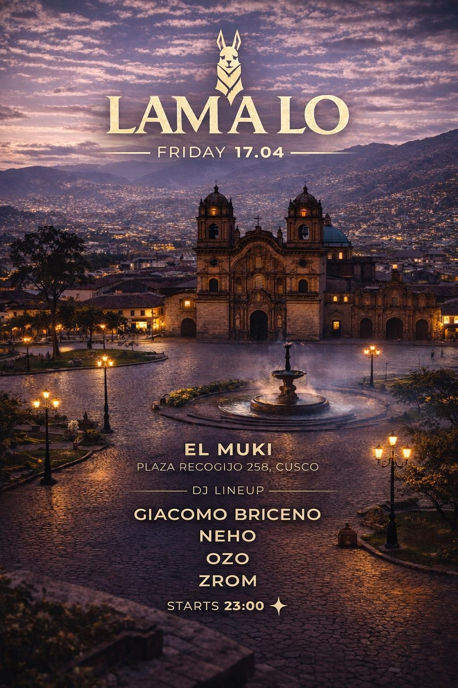

LAMALO
fecha: 17/04/26 hora: 11pm
lugar: El Muki,
Santa Catalina Angosta 116, Cusco

entradas: PASSLINE

🔥 LAMALO arrives in Cusco 🔥
A night where music, energy, and the magic of the city come together ✨
This Friday 17.04, get ready for a unique experience in the heart of Cusco, surrounded by history, lights, and unforgettable vibes 🌄
🎶 International DJ Lineup
Giacomo Briceno
Neho
Ozo
Zrom
📍 El Muki
Sta. Catalina Angosta #116
⏰ Doors open: 23:00
🌍 International crowd • Travelers from all over the world • Pure energy
Cusco never sleeps… and neither will you 😉
#Lamalo #CuscoNights #PartyInCusco #IsraelVibes #ElectronicMusic #TravelAndParty
LINE-UP:
Giacomo Briceño
Neho
Ozo
Zrom